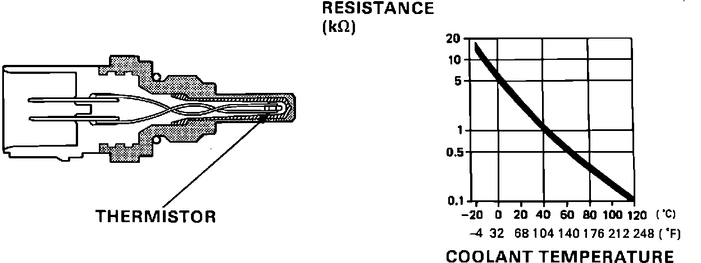

Coolant Temperature Sensor/Switch (For Computer): Description and Operation
Engine Coolant Temperature (ECT) sensor:

PURPOSE
By measuring the amount of resistance at the sensor, the ECU can adjust the length of injector opening time required by the engine.
LOCATION
Right side of engine, below distributor assembly.
OPERATION
As water temperature increases, sensor resistance decreases. The ECU receives sensor information as resistance to ground. Water temperature information is used to determine proper fuel delivery.